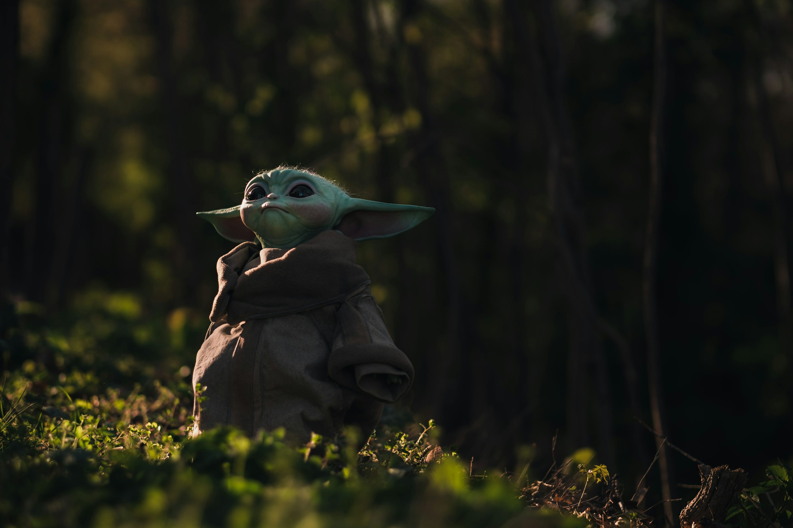

Din Djarin (O Mandaloriano)
Din Djarin é um caçador de recompensas mandaloriano, protagonista da série "The Mandalorian". Ele é conhecido por sua armadura característica e código de honra.

Grogu (Baby Yoda)
Grogu, popularmente chamado de "Baby Yoda", é uma criatura da mesma espécie do Mestre Yoda, que Din Djarin protege e cuida durante a série.
